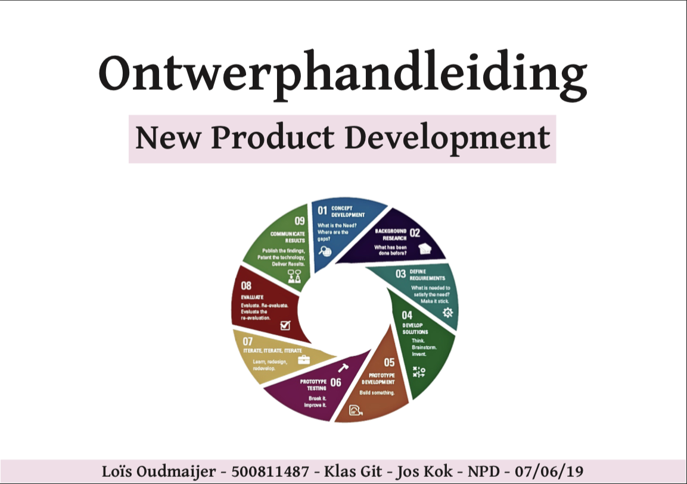

Ontwerphandleiding - NPD
Situatie
Dit was een opdracht voor het vak New Product Development in leerjaar 1 CMD. De docent die ik hiervoor had was Jos Kok. De opdracht was om een ontwerphandleiding te maken met alle methodes en samengevatte artikelen die je gebruikt om ideeontwikkeling en ontwerpkeuzes te onderbouwen.
Taak
Dit was een individuele opdracht dus ik werkte alleen. Tijdens de lessen die ik volgde van dit vak werkte we wel in groepjes al deze methodes af voor een andere opdracht. Maar de ontwerphandleiding heb ik zelf in elkaar gemaakt. Mijn doel was om alle methodes zo goed en duidelijk mogelijk te beschrijven.
Activiteiten
Elke week behandelde we een aantal methodes en artikelen in die week. Ik heb best wel goed bijgehouden welke methodes we behandelde en ik had deze toen meteen in de ontwerphandleiding beschreven en geplaatst.
Resultaat
Vaak heb ik moeite met veel te laten liggen tot op het laatste moment. Dit keer had ik juist best wel goed per week bijgehouden en daardoor kwam ik op het einde ook niet in de stress. Ik heb voor deze opdracht een voldoende gehaald en daar ben ik trots op. Wij hebben deze handleiding gemaakt om later al deze methode makkelijk terug te kunnen lezen en dat is gelukt.
Reflectie
Dit voorbeeld is een goed bewijs omdat we tijdens het maken van deze handleiding ook alle methodes uitgevoerd. Ik heb ze dus niet alles beschreven maar ook zelf gedaan. Dat was erg leerzaam. Ik zou volgende keer wat beter de methodes bestuderen voor ik naar de les kwam. Nu had ik vaak pas na de les de methode goed bestudeert en in de handleiding gezet.